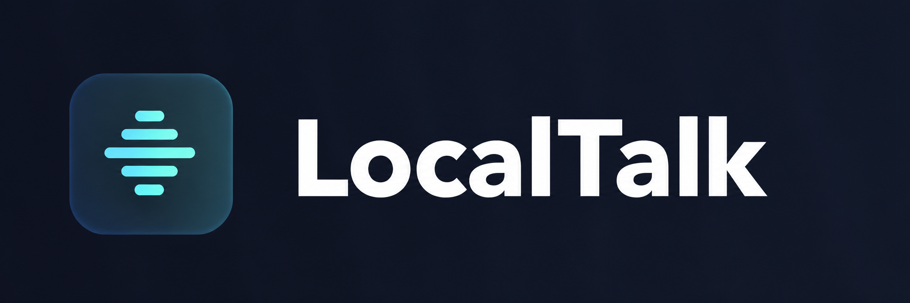

Traducción de voz en tiempo real
Captura de voz desde el micrófono, transcripción del habla y visualización de la traducción durante la conversación.

Clawde Lab / Proyecto de IA local
Traduccion de voz a voz mediante modelos de inteligencia artificial, ejecutados localmente y coordinados con Docker.
Ver codigo en GitHub Abrir LocalTalk localCaptura de audio y reconocimiento de voz (STT).
Procesamiento del texto en el idioma de destino.
Sintesis de voz (TTS) para reproducir el resultado.
Una plataforma experimental de inteligencia artificial local para reconocer, traducir y generar voz, con servicios independientes ejecutados mediante Docker.
Captura de voz desde el micrófono, transcripción del habla y visualización de la traducción durante la conversación.
Nuevo módulo para escribir textos, seleccionar idiomas, obtener traducciones y convertirlas en audio.
Motor de generación de voz conectado a LocalTalk. Síntesis validada utilizando una voz personalizada.
Selección y utilización de voces personalizadas. Se ha validado la generación de audio con la voz PatoTest.
Escucha los audios generados directamente desde LocalTalk o descárgalos en formato WAV.
Cuadros de texto responsivos, selectores de idiomas, controles de voz y acceso desde computadores y celulares conectados a la red local.
Estas funcionalidades están implementadas en el entorno local. La compatibilidad con cada idioma, motor y voz depende de los modelos instalados y su configuración.
LocalTalk permite experimentar con diferentes motores de reconocimiento y sintesis de voz, segun la configuracion y los componentes disponibles.
Motor de reconocimiento automatico de voz para transcribir audio a texto.
Alternativa de reconocimiento de voz basada en Whisper, con capacidades multilingues y procesamiento optimizado.
Sintesis de voz multilingue con capacidades de clonacion de voz.
Motor de generación de voz integrado en LocalTalk, con síntesis y uso de voces personalizadas validados.
Alternativa de sintesis de voz para experimentar con voces y rendimiento.
Motor de sintesis de voz local, ligero y orientado a un consumo eficiente de recursos.
Servicios independientes para facilitar la operacion y las pruebas locales.
Aceleracion de modelos de inteligencia artificial compatibles.
Proyecto base sobre el que se desarrollan las personalizaciones Casero.
La disponibilidad de cada motor depende de su instalacion, configuracion e integracion.
LocalTalk es una plataforma experimental y funcional de traducción de voz y texto mediante inteligencia artificial ejecutada localmente.
Integra reconocimiento de voz, traducción, síntesis y clonación de voces mediante una arquitectura de servicios Docker, con soporte de aceleración GPU NVIDIA.
Funcionalidades validadas: traducción de texto, generación de voz con OmniVoice PRO, utilización de voces personalizadas, reproducción y descarga de audio WAV, e interfaz web adaptable a dispositivos móviles.
El proyecto continúa evolucionando mediante mejoras de rendimiento, compatibilidad e integración de nuevos modelos de IA.
Desarrollo: Clawde Lab — Proyecto personal de ingeniería e IA.
Proyecto base: PolyTalk CE 0.4.0, con personalizaciones e integraciones adicionales.
Estado: Versión funcional en desarrollo continuo.
Proyecto experimental de uso local. Los modelos, voces y componentes externos conservan sus respectivas condiciones de licencia. Clawde Lab y LocalTalk son proyectos diferenciados; esta pagina es informativa.